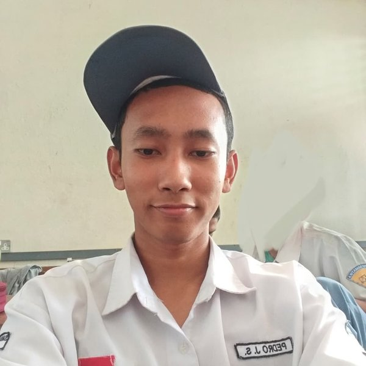

Halo, sayaHi, I am
Pedro Juanda Sebayang
Mahasiswa D4 Rekayasa Keamanan Siber, Politeknik Negeri Batam Cyber Security Engineering Student (D4), Politeknik Negeri Batam
Lulusan Teknik Komputer dan Jaringan di SMKN 1 Batam. Tertarik dengan bidang cyber security.
A Computer and Network Engineering graduate of SMKN 1 Batam. Interested in cyber security.

Tentang SayaAbout Me
Saya lahir dan besar di Batam. Dari SD saya udah pernah megang komputer dan penasaran gimana cara kerja laptop, sampai akhirnya masuk jurusan TKJ SMKN 1 Batam. Di sana saya belajar rakit PC, setting MikroTik dan Cisco, terus turun langsung ke lapangan lewat PKL di ISP lokal.
Sekarang saya lanjut kuliah D4 Rekayasa Keamanan Siber di Politeknik Negeri Batam. Di luar kuliah saya ikut CTF dan bikin tools sendiri. Mulai dari aplikasi enkripsi file, generator wordlist, sampai konsol monitoring jaringan. Saya suka juga sih ngolah data.
I was born and raised in Batam. I have been using computers since primary school and was curious about how a laptop works, which eventually led me to TKJ at SMKN 1 Batam. That is where I learned to build PCs, set up MikroTik and Cisco gear, and then went hands-on through an internship at a local ISP.
Now I am studying Cyber Security Engineering (D4) at Politeknik Negeri Batam. Outside class I play CTFs and build my own tools: a file encryption app, a wordlist generator, and a network monitoring console. I also enjoy working with data.
KeahlianSkills
-
JaringanNetworking
-
Keamanan SiberCyber Security
-
Data Management
-
Pengembangan & InfrastrukturDevelopment & Infrastructure
Pengalaman & PendidikanExperience & Education
-
- sekarangpresent
Mahasiswa D4 Rekayasa Keamanan SiberCyber Security Engineering Student (D4)
Politeknik Negeri Batam · Jurusan Teknik InformatikaInformatics Department
- Proyek PBL: NetEye, konsol monitoring dan recon jaringan (PyQt6 lalu versi web Flask, nmap, Docker).
- Aktif ikut CTF dan seleksi kompetisi keamanan siber.
- PBL project: NetEye, a network monitoring and recon console (PyQt6, then a Flask web version, nmap, Docker).
- Active in CTFs and cyber-security competition selections.
-
Pelatihan & Uji Kompetensi JaringanNetwork Competency Training & Assessment
SMKN 1 Batam
- Ikut pelatihan dan uji kompetensi jaringan standar BNSP untuk jurusan TKJ.
- Lulus, dan waktu pengerjaan saya termasuk yang paling cepat di kelas.
- BNSP-standard network competency training and assessment for the network engineering program.
- Passed with one of the fastest completion times in the class.
-
Teknisi Jaringan (PKL)Network Technician (Internship)
PT Filltech Antar Nusa (ISP) · Batam
- Troubleshooting internet di banyak ruang kelas SMKN 4 Batam, termasuk perbaiki perangkat langsung di lokasi.
- Tangani gangguan langsung di ruang server SMKN 5 Batam (MikroTik CRS, RouterBoard, OLT).
- Setting router MikroTik, pasang dan perbaiki WiFi pelanggan.
- Troubleshot internet connectivity across classrooms at SMKN 4 Batam, including on-site device repairs.
- Handled outages directly in the SMKN 5 Batam server room (MikroTik CRS & RouterBoard, OLT).
- Configured MikroTik routers and installed / fixed customer WiFi.
-
-
SMK Negeri 1 Batam
Teknik Komputer & Jaringan (TKJ)Computer & Network Engineering
- Peringkat 1 pembaca buku terbanyak perpustakaan sekolah (2025).
- #1 most books read at the school library (2025).
-
-
SMP Negeri 4 Batam
Juara 2 KSN IPS Provinsi Kepulauan Riau · Peserta Tingkat Nasional 20212nd place KSN Social Sciences, Riau Islands · National participant 2021